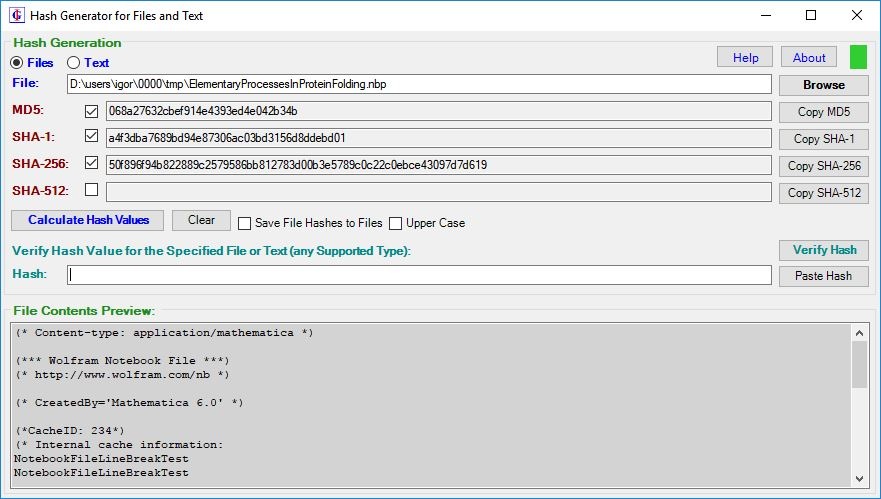
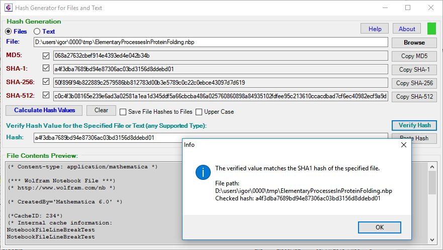
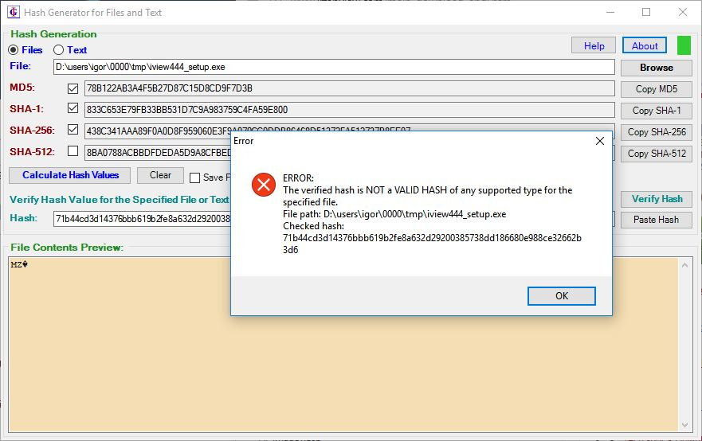
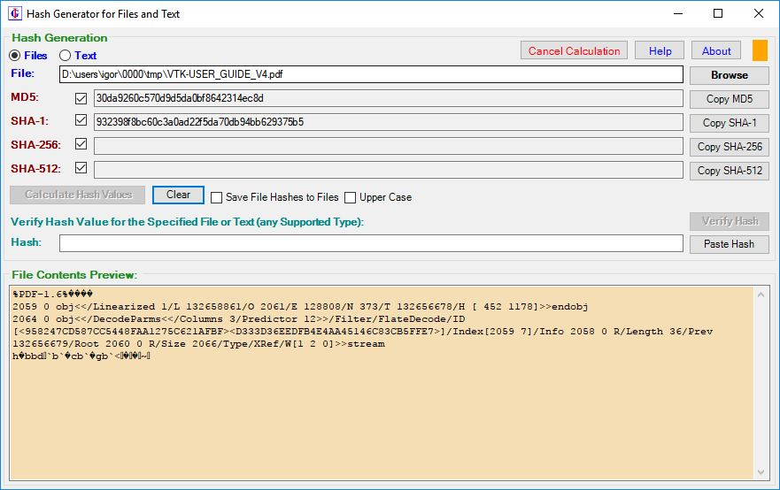
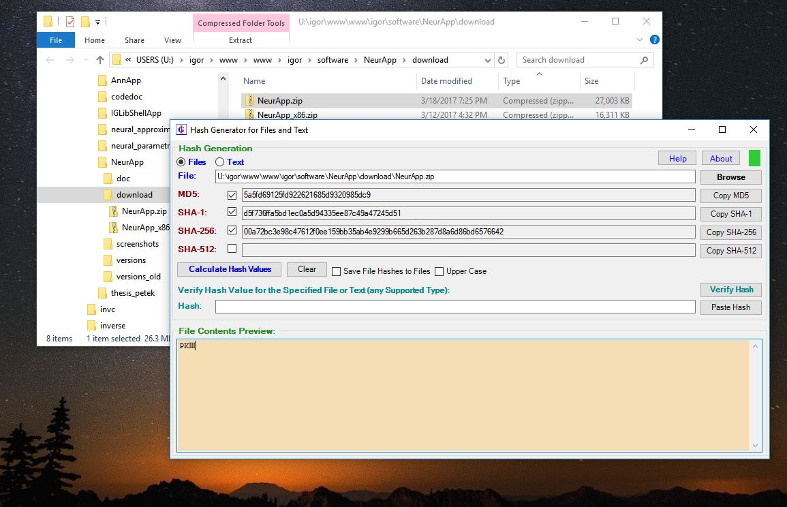
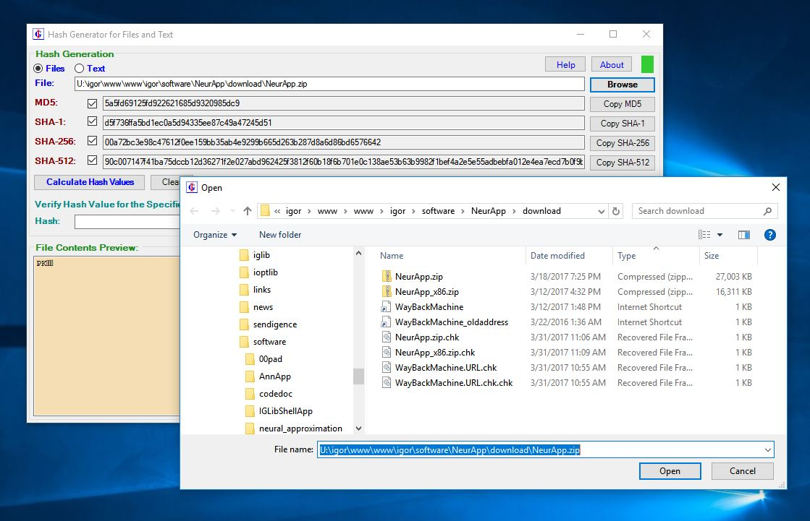
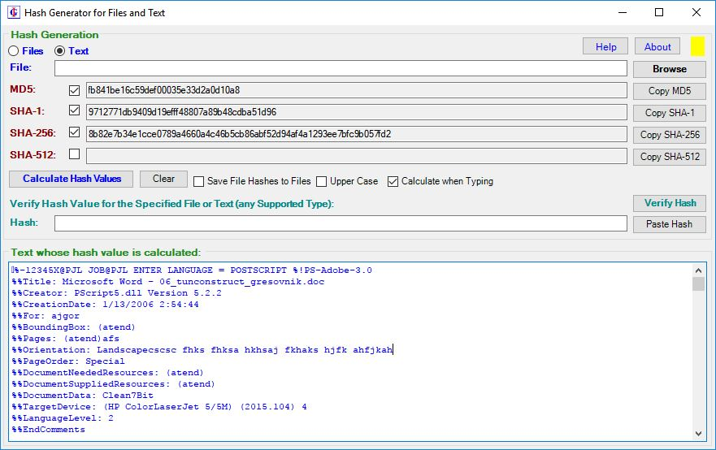
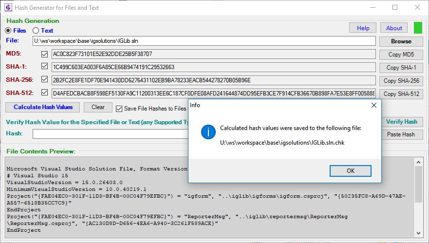
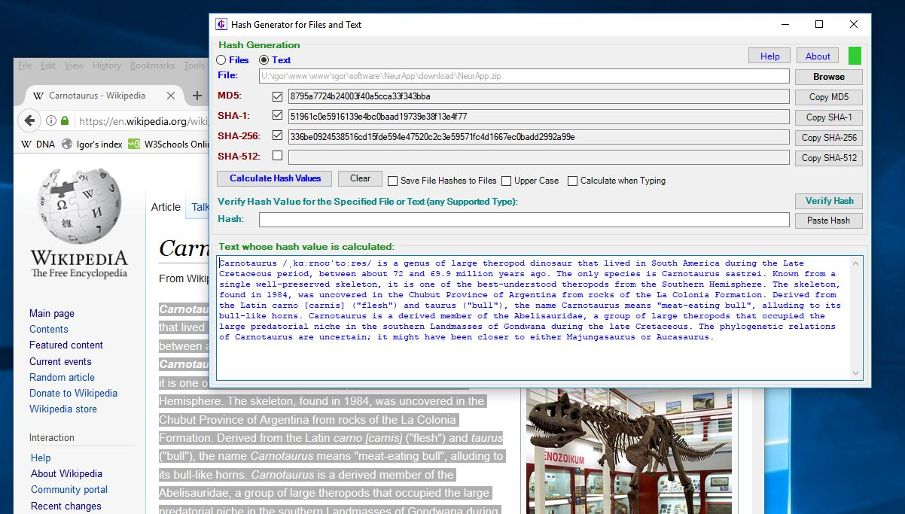
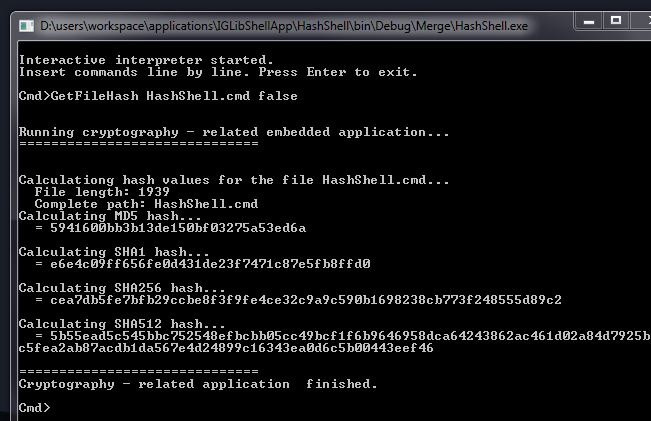

HashForm is a simple
applications for generation of MD5, SHA-1, SHA-256 and SHA-512
hashes (checksums) from files and text. In addition, a supposed
checksum can be verified for a file. HashShell
provides this functionality in form of shell application, and
includes in addition an extensive set of cryptographic utilities
(symmetric and asymmetric encryption, certificate manipulation,
etc.). It can be used as stand-alone tool for performing your
cryptographic tasks, or as a module incorporated in other software
and called via shell interface. Both applications are based on the .NET
framework and the IGLib
library. You can freely download and use the applications from the Download
Section.
Hash
functions are used to verify the integrity of files and
messages, and are commonly used to to guard
against malicious changes to protected data. Algorithms for
calculation of hash values (or checksums) produce a string of
certain length for each file or text. Small changes of text produce
very different hash values and it is usually difficult to
intentionally produce a text with the same hash value as the
specified. Therefore, matching hash value for a given text or file
is a guarantee that the your version of text or file is the same as
the original.
Hashing algorithms differ significantly according to how
difficult it is to compromise them (i.e., how difficult is to
produce a different file or message that has the same value). While
one needs to verify that a file has not undergone unintentional
changes during transfer (e.g. via communication routes),
verification of MD5 or SHA-1 checksums may be sufficient as the
probability of two different files having the same values is small.
When one must guard the file against intentional malicious attempts
of replacing the original, one should used stronger algorithms such
as SHA-256 or SHA-512, for which it is believed that such
modifications of contents that produce the same hashes of these
types are hard (practically impossible) on modern computers.
The HashForm and HashShell applications were created by Igor
Grešovnik in the scope of the IGShell
project, which demonstrates the use of the IGLib
libraries.
HashForm
HashForm is a GUI
application for calculation and verification of file or text hashes.
Simply choose a file whose hash you want to calculate, and click on
the generation button. Alternatively, you can insert a supposed hash
value into a text box and verify if this value actually matches any
type of supported hash values (checksums) of the specified file or
text. You can switch between calculation of hashes for files or
arbitrary text that you insert in the text box at the bottom of the
application's window.
Application is designed for comfortable operation that
permits little possibilities of mistakes. Easy switching between
file and text operation is supported by distinctive colors that
unambiguously describe the current mode of operation. Files or text
can be simply dragged & dropped to the large text box at the
bottom. In file mode, the text box provides a quick preview to make
sure that one operates on the intended file. Preview changes
background color when a binary file is worked, which accounts for
possibility that preview does not show file contents precisely.
Hash values are calculated immediately when the hash text or file is
specified. The generate and clear buttons are there to make really
sure that you know what shown hashes correspond to. Hash values can
be picked by the copy buttons, which makes sure that no characters
are unintentionally modified or extra characters appear. A supposed
hash value can be readily verified by similar safe & comfortable
manipulation. In order to alleviate manual comparison, hexadecimal
hash strings can be generated both in upper or lower case.
Finally, the calculated hash values can be saved to a text
file whose name is generated by adding the ".chk" extension to the
hashed file. This file can be stored for later verification that
file contents have not been modified, either intentionally or
unintentionally.
Download a single executable here
(see the Download Section for more details,
including the hashes). The software is freeware. User manual is
available in HTML or PDF form. Software has
the
following features:
·Calculation and
verification of standard checksums (hash values):
oMD5
oSHA1
oSHA256
oSHA512
oUser
can
select which checksums are calculated (important for large files)
oPossibility
of
saving calculated checksums to a file
·Calculation of checksums
(hash values) of arbitrary files
oSpecify
the file by browsing or drag & drop a file from a file manager or
by specifying file path
oDirectory
of last selected file is remembered
oImmediate
calculation
of checksums after selection of a file
·Calculation of checksum of
arbitrary text
oText
can
be typed in by user
oText
can
also be dragged & dropped from a text editor, office
application, browser, or any other application that supports
selection and drag & drop of text
§Immediate
hash
calculation when text is dragged into the working area
·Easy switching between
calculation of checksums for files or for text
oSwitching
is
automatic:
§when
text
or file is dragged & dropped into the working area
§when
a
file is selected either by browsing or by specifying file path
·Easy to use user interface,
optimized to speed up work and reduce possibility of mistakes
oHelp
file
– user manual can be displayed by clicking a button
oResponsive
user
interface in case of large files
oPossibility
to
cancel calculation of checksums (important for very large files)
oAutomatic
calculation
of checksums when possible, no need to click a button:
§After
drag
& drop of file or text
§After
selection
of a new file
oCopying
of
calculated checksums by clicking a button to minimize possibility
of errors
oPasting
checksums
to be verified from clipboard by clicking a button
·Cross-platform, runs on
Windows, Lunux or Mac. On non-Windows systems, the Mono framework
must be installed in order to run HashForm. The same executable is
run on different platforms.
Screenshots

HashForm in action.

Checksum verification. Paste shecksum (hash) from clipboard and
click "Verify Hash".

When the hash provided by source does not match the calculated hash
of the file, this is clearly indicated.

Calculating. You can cancel calculation for large files. Indicator
light in the top-right corner indicated that calculation is being
performed and final results are not ready yet. In "File Contents
Preview", different color indicates that the file in question is a
binary file.

You can simply drag files from a file manager such as Windows
Explorer, Total Commander (Windows), Midnight Commander, Dolphin,
Krusader, Konqueror, GNOME Commander (Linux), etc. Files can be
dropped into the file path text box (beside "File:") or into the
preview box below (under "File Contents Preview:").

Users can also browse for the file. Location of the last file is
remembered and browsing always starts form this location.

In text mode (as opposed to file mode) checksums (hashes) are
calculated for arbitrary text that user inserts into text box at the
bottom (note that now the "Text" radio button is checked in the
top-left part of the window). Hashes can be checked immediately as
user types (the "Calculate when Typing") checkbox. As always, the
indicator light in the top-right corner informs the user whether
calculation is in progress, it is finished, or the application is
idle.

Calculated file hashes can be saved to a file. Just check the "Save
Hashes to Files".

Text can also be dragged and dropped into the text box at the bottom
of application window. In any application shat supports selection
and dragging of text (browsers, office applications, word
processors, text editors, etc.), select the text whose hashes need
to be calculated, and simply drag the text into the textbox at the
bottom. If in file mode, the application automatically switches to
text mode when text is dropped.
HashForm is cross-platform. Here it is running on Ubuntu Linux.
HashShell
HashShell is a
command-line application that contains commands for a number of
cryptographic utilities. As shell application, it is suitable for
use in batch files.
The available cryptographic utilities include:
Calculation of cryptographic file hashes (checksums):
MD5, SHA-1, SHA-256, SHA-512 haches are computed.
Calculation of hashes for strings, byte arrays, or files
Bulk shecksums:
File hashes can easily be calculated for all files from
the specified directories and all their recursive
subdirectories, with possibility to use wildcard filters and
to specify recursive directory level.
Hashes stored to a file can easily be verified by a single
command at a later time, providing a mechanism for easy
monitoring directory trees for changes.
Password hashing, key derivation, and password authentication.
Input/output in string form or in hexadecimal or base 64
encoding binary form is supported.
Easy and safe bulk encryption of all files from the
specified directories and all their recursive subdirectories,
with possibility to use wildcard filters and to specify
recursive directory level.
Originals are deleted only after encryption/decryption
It is possible to separate the encryption/decryption and
cleaning stage.
One version of a file (original or encrypted) always
remains in its location. Special cleaning commands must be
performed to delete all versions of a file.
Various levels of commands - from basic (intended for expert
users) to safer high level commands with greater level of
automatism and less options.
Public key cryptography (asymmetric algorithms) - not yet
implemented in free versions of software:
RSA, DSA public key algorithms.
Asymmetric encryption, decryption, and signatures.
Key generation.
Encryption of strings, byte arrays, or files.
Bulk encryption of files.
The same simplicity and safety as for symmetric
encryption, although files are not commonly encrypted by
asymmetric algorithms.
Elaborated user interface:
Countless possibilities through parameters that modify
behavior of commands.
Uniform and mnemonic semantics of parameters.
Easy selection of multiple input files by commands.
Uniform, safe and comfortable policy of handling file
overwrites and deletions.
By default, overwrites and deletions need user
confirmation.
Within a single command, confirmations can be done for all
affected files by a single instruction.
Easy to repeat previous choices.
Additional options to control automatic overwrites or
deletions, or automatic skipping, make possible to use the
shell in batch files.
Input of strings and byte arrays in different forms.
A number of helper utilities.
File cleaning:
Easily remove originals, encrypted files, or decrypted
files.
Safe behavior - at least one version of each file will
remain, unless special options are used.
Key generation:
Key derivation functions for generation of cryptographic
keys or initialization vectors from passwords.
Provided or randomly generated password salts can be used.
Easy switch between both through command parameters.
Time measuring functionality provided to assess the number
of iterations to use in order to achieve sufficient level of
security.
Handy conversion utilities:
Convert between strings, arrays of bytes in hexadecimal or
base-64 encoding, or integers.
Rather than having extensive documentation, use of
cryptographic utilities is documented by the example command file excrypto.cmd
(text version). This file
contains explaining comments and a number of example commands that
should be run from the containing directory examples/crypto/. The best way to run
the commands is to download and extract the examples directory, go to the examples/crypto/ subdirectory and run
the shell in interactive mode by the following command:
HashShell.exe Interactive
This launches a shell with interactive command prompt where you can
copy commands from the example command file and execute them one by
one. It is important that the current directory is set to the
directory that contains the excrypto.cmd
file (text version),
since many of the commands use auxiliary files and directories that
are included in this directory. Some examples of commands that you
can run by the application can also be found in the HashShell.cmd file,
but
this is far less exhaustive than excrypto.cmd.
You can run the applications in several ways. The most common is to
execute a single application's command:
HashShell.exe CommandName <Arg1>
<Arg2> ...
For example, the following command will calculate hash values of the
executable itself:
HashShell.exe GetFileHash HashShell.exe
false
In the above case, the "false" argument instructs the command not to
write the calculated hashes to a file. If this argument was true,
the hash values would be written to the file named
"HashShell.exe.chk", located in the same directory as the file whose
hashes are calculated.
From HashShell, you can also launch the GUI application HashForm for calculation and
verification of
file/string cryptographic hashes:
HashShell.exe HashForm
Other ways of using HashShell:
The application can be launched in interactive
mode by running
HashShell.exe Interactive
or shortly
HashShell.exe int
In the interactive mode, you can insert commands one by one. You can
copy commands from the example command file (HashShell.cmd or excrypto.cmd / html), e.g.
Cmd>GetFileHash HashShell.exe false
Yet another way to use the application is to run a command file,
which is executed by teh application's command-line interpreter:
HashShell.exe Run HashShell.cmd
This will run commands from HashShell.cmd line by line. Note that C
stands for comment, and you can selectively comment or uncomment
commands from the interpreted file.
Cryptographic utilities:
HashShell provides an exhaustive set of cryptographic
utilities that can be used in countless ways. In order to learn
more, download and unpack the examples,
go to the directory exemples/crypto within the unpack examples, run
the shell in interactive mode, open the example command file excrypto.cmd and
read its
comments or try to execute example commands. It is important to run
the shell in the above mentioned directory as some demonstrative
examples depend on the files that are included in the directory.
Only some basic examples are given below.
In order to run the shell interactively, type
HashShell.exe Interactive
The "Cmd>" prompt appears. Cryptographic commands are invoked by
the Crypto groub command followed by specific command and
its parameters.
The following command will calculate the SHA1 hash of the string "My
String":
Crypto CheckSum -t SHA1 -s "My String"
We can verify that the specifiied hash corresponds to the given
string by using the -c option (for "check") and specify the presumed
hash value after the -h option:
Crypto CheckSum -t SHA1 -s "My String" -c -h
07841b2e0fda6cfbf7c6bf00f179233cf4e3247b
To calculate file hashes, omit the -s option. Hashes for groups of
files can be calculated, stored to a file, and verified at a later
time. The followind will calculate hashes for all files contained
directly in the current directory:
Crypto CheckSum -t MD5 *.*
One of the strong points of the HashShell is that operations
can be performed on large number of files by single command. One can
choose between all files contains in the specified directories and
their recursive sub-directories, filter files by using wildcards,
etc.
The following command calculates hthe SHA-256 hashes (the -t
parameter) for all files with ".txt" or ".cmd" extensions (the -rp
options) contained in the current directory and all its
sub-directories (the -rd parameter) and stores them to the
"hashes.SHA256" file:
Once file hashes are stored to a file, it is easy to check whether
all the files still have the same hash values (which guarantees that
the files have not been modified since the hashes were calculated
and stored):
Crypto CheckSum -c hashes.SHA256
Encryption of text or files is another task that can be performed by
the shell. To encrypt one or more strings, type the following
command:
Above, the -pw parameter specifies the password (which must be
secret) and the -iv parameter specified the initialization vector
for the symmetric encryption algorithm used, free parameters are
strings to be encrypted, and encryption algorithm is not specified
(since there is no -t parameter) meaning that the default algorithm
is used (which is Rijndael). One of the two strings is restored by
the Decrypt command (where the same password and
initialization vector must be provided, and the free parameter is
the encrypted string returned by the previous command):
Without the -s parameter, files are encrypted. As with hash
calculation, whole groups of files can be encrypted at once,
including all files contained in the specified directories and their
nested sub-directories:
By default, original files remain intact (which contributes to safer
use and reduces the chances to accidentally lose the original
contents), and encrypted contents are stored to the files with the
same names (and in the same directories) but with the distinctive
extension ".ig_enc" appended.
The opposite operation is decryption. Here we will use the -delorig
option in order to delete the (decrypted) input files after the
operation has been performed. The -delorig parameter also causes the
decrypted files have the same names as the original files from which
we started the procedures, causing the originals be overwritten
(after user confirmation is obtained):
Without the -delorig option, the enxrzpted files would remain on the
system, and decrypted contents would be stored to the files with
distinctive extension ".ig_dec", and also the input files (i.e. the
encrypted versions) would remain intact. Encryption / decryption can
be combined by file hashes in order to make sure that the restored
original files actually match the originals. It is always a good
idea to store hashes of original files, to be able to verify later
that the encrypted / decrypted files match the originals.
Finally, there are countless possibilities to modify the behavior of
commands and to use auxiliary tools. We went through it only very
briefly, and for more information you should check the example file.
Auxiliary utilities include Cleaning the remaining unnecessary files
produced by encryption / decryption:
There are a number of other auxiliary utilities. Por example, the Convert
command helps you when conversions need to be performed between
strings, byte arrays in hexadecimal, and byte arrays in base-64
encoding:
Crypto Convert Luxembourg London Ljubljana
Then, there exists a command that generates a password or an
initialization vector on basis of provided parameters, including the
specified number of iterations in an iterative process to extract
the unique key from provided parameters:
The key generated in such a way can be used asa key for
symmetric encryption or decryption. If we depend on key extraction
algorithm, we must be able to specify enough iterations, such that
time necessary for generation of a key is large enough to enable
good security. The TimeKeyGeneration command makes
possible to measure times necessary for key extraction with specific
parameters such as number of iterations, length of the key, and
initialization vector
TimeKeyGeneration -pwlen 60 -sllen 50 -pwit 100
Some other commands enable, for example,
running system commands (Sys) or calculate expressions by a built-in
calculator (Calc). The calculator is convenient because you can
store values (including values of expressions) in variables that you
can use in later calculations. See the HashShell.cmd file for basic
examples.
Example of using the calculator:
Below is transcription of user input and output of the application
after running the following command: HashShell Interactive Calc
JS> a=2
= 2
JS> b=5
= 5
JS> c=2*(a+b)
= 14
JS> sin(c*const_pi/3)
= 0.8660254037844393
JS> exp(const_e)
= 15.154262241479262
JS> 1.5*(4+8+9-3)*(5+22+pow(3,5))
= 7290
JS> pow(2,10)
= 1024
JS> log(64,2)
= 6
JS> /q
Command-line JavaScript expression evaluator stopped.
When running the application in interactive mode, a
single calculator command can be evaluated at any rime by preceding
it by the Calc command. This executes a single command in
the calculator, as opposed to launching a command shell where
multiple commands can be inserted and executed. The calculator will
maintain its state during the lifetime of the application,
regardless of whether its command are inserted interactively or not.
This is demonstrated by the following sequence of commands inserted
in the shell's interactive command-line:
Cmd>Calc x = 16
= 16
= 16
Cmd>Calc pow(x, 4)
= 65536
= 65536
Cmd>
The CheckSum Command:
The CheckSum command calculates or verifies various
type of checksums (hash functions MD5, SHA-1, SHA-256, SHA-512) of
files or strings. Use of the CheckSum function is summarized
here as example, but this should not be considered a complete
specification of the command. For more exhaustive specification,
please consider the examples in the examples/crypto/excrypto.cmd
file. Examples should be run in the directory containing this file (available
here) in order to use
the auxiliary files properly.
Usage: CheckSum <-c> <-s string> <-h
hash> <-t hashType> <-o outputFile>
<inputFile1> <inputFile2> ...
-t hashType: specifies hash type
(MD5, SHA-1, SHA-256, SHA-512)
-c: verification rather than calculation of
hashes.
-s: hash is calculated or verified
for the specified string rather than file(s).
-h hash: hash value to be verified.
-o outputFile: output file where
calculated hashes are written.
inputFile1 inputFile2 ...: input
files, either files whose hashes are calculated, or files containing
hash values to be verified (in the case of -c option).
CheckSum Examples:
Calculate MD5 checksums of several files & store them to the
file hashes.MD5:
HashShell.exe CheckSum -t
MD5 -o hashes.MD5 app.cmd examples.cmd excrypto.cmd This generates console output looking like this (provided that
all stated files exist):
MD5: 207fbc52a83a3f2538713e6e1f73697d
app.cmd
MD5: 49b2f24d614e092d49ec16b87f5a3a0c examples.cmd
MD5: c8fff3c43002a72258474b092465813d excrypto.cmd
Hashes written to file: hashes.MD5
Contents of the generated file hashes.MD5 are something like this:
207fbc52a83a3f2538713e6e1f73697d
app.cmd
49b2f24d614e092d49ec16b87f5a3a0c examples.cmd
c8fff3c43002a72258474b092465813d excrypto.cmd
In order to verify previously calculated checksums, run the
following command (note the -c option; stated files are now checked
for stored hash information):
HashShell.exe CheckSum -t
MD5 -c hashes.MD5
This generates console output like this:
From input file hashes.MD5:
MD5 OK: app.cmd
MD5 OK: examples.cmd
MD5 OK: excrypto.cmd
All files OK.
= True
If you change contents of any of the verified files (say
examples.cmd) and run the same command again then the test will not
pass for that file (or more files if more of them were modified) and
console output will be as follows:
From input file hashes.MD5:
MD5 OK: app.cmd
MD5 NOT PASSED: examples.cmd
MD5 OK: excrypto.cmd
2 files passed, 1 NOT PASSED.
= False
To calculate & verify other kinds of checksums (e.g. SHA-1,
SHA-256, SHA-512), change the type parameter:
HashShell.exe CheckSum -t
SHA-256 -o hashes.SHA256 app.cmd examples.cmd excrypto.cmd
HashShell.exe CheckSum -t
SHA-256 -c hashes.SHA256
To calculate hash for a single file (without writing it to a file):
HashShell.exe CheckSum -t
SHA-1 app.cmd
This will generate console output that looks something like this:
SHA1:
68dc05d41fde142774c081ed83a927daf07294dd app.cmd
Direct verification of specified hash value of a file (note the
assumed hash value after the -h option):
HashShell.exe CheckSum -t
MD5 -c app.cmd -h 207fbc52a83a3f2538713e6e1f73697d
This generates console output that looks something like this:
File MD5: OK.
= True
If you change the contents of the checked file, or if you change the
hash value to be verified, and run the same command again, the test
will not pass and the console output will be as follows:
File MD5: NOT PASSED.
= False
To calculate hashes (of various types) of the specified string (in
this case "My String"), run the following:
HashShell.exe CheckSum -t
MD5 -s "My String"
HashShell.exe CheckSum -t
SHA1 -s "My String"
HashShell.exe CheckSum -t
SHA256 -s "My String"
HashShell.exe CheckSum -t
SHA512 -s "My String"
The first command generates the following console output:
MD5: 4545102cc40ea0a85124cf4b31574661
= 4545102cc40ea0a85124cf4b31574661
In order to verify hash value of the specified string, run the
following commands:
HashShell.exe CheckSum -t
MD5 -c -s "My String" -h 4545102cc40ea0a85124cf4b31574661
HashShell.exe CheckSum -t
SHA256 -c -s "My String" -h
8a7046a0b97e45470b13f30448c9d7d959aa5eea583d2f007921736b2141ac75
The first command produces the following output:
String MD5: OK.
= True

Documentation
IGShell ReadMe file.
Contains very basic information about the software, which also
applies to HashForm and HashShell.
IGShell license Agreement.
Contains terms of use of the IGShell. HashForm and HashShell
can be downloaded either as individual applications or as integral
part of IGShell. In the latter
case, the IGShell license applies for use of the software.
HashShell License
Agreement contains terms of use. HashShell is a freeware
copyrighted by Igor Grešovnik. It uses IGLib and other libraries
with their own license agreements. Example command file, excrypto.cmd
(text version, complete examples
directory).
Equipped with rich comments and a number of example commands, this
is the reference source for learning how to use the cryptographic
utilities of IGShell and HashShell. To learn from the
file, download and install hashshell,
then download and unpack the examples
directory, launch the application interactively in the examples/crypto/
sub-directory of the
downloaded examples, and execute commands from the file one by one.
Shell is started interactively by running
hashshell.exe int
Commands are commented by single comments (the 'C' character at
beginning of lines), and are written in fulll form, i.e. beginning
with "Internal IG.Script.AppBase Crypto". This is necessary
in the IGShell, but in HashShell you can type in
short versions of commands that begin simply with "Crypto",
i.e. you can omit the script loader command ("Internal") and
the application class name ("IG.Script.AppBase").
Notice: HashForm 1.6.1 was uploaded on May 13, 2017. It contains
several GUI improvement and bug fixes in comparison with HashForm
1.6. See User Manual
(in HTML) for
details.
HashForm:
Download HashForm.exe. Just
click the link, save the file and double-click on it to run.
On some systems, the single executable file will not work. In this
case, you can download the HashForm.zip,
unpack the contents to some directory, and then run the contained
HashForm.exe from the unpacked directory (note that the dll files
must remain with the executable in this case).
See also:
HashForm License Agreement
contains terms of use. HashForm is a freeware copyrighted by
Igor Grešovnik. It uses IGLib and other libraries with their own
license agreements.
HashShell:
Download HashShell.exe and
eventually HashShell.cmd. Then
open a command shell and run
HashShell.exe Interactive
In the interactive mode, you can execute example commands from the
HashShell.cmd file. For more detailed instructions, see the HashShell Section.
On some systems, the single executable file will not work. In this
case, you can download the HashShell.zip,
unpack the contents to some directory, and then run the contained
HashShell.exe from the unpacked directory (note that the dll files
must remain with the executable in this case).
See also:
NeurApp
– an educational application for visually exploring features
of function approximation with artificial neural networks
(ANN). It creates 1D and 2D ANN models of user defined
functions and provides visualization capabilities to compare
these models with originals. It can be downloaded
from Softpedia.
AnnApp –
software for exploring multidimensional ANN-based models.